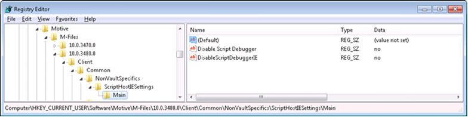
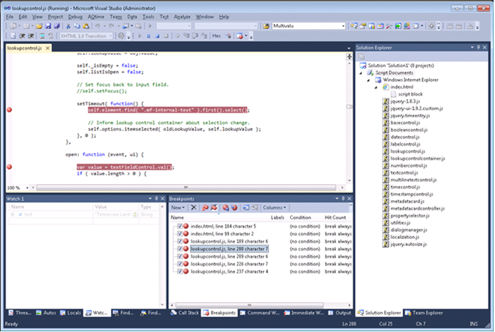

Debugging JavaScript in M-Files-hosted Web Browser
These are the instructions for debugging JavaScript code that runs in web browser as a part of M-Files UI. The instructions apply for M-Files 9.0.3372.0 and newer. Instructions can be used to debug the browser-ran code only (dashboards and persisted browsers). Hosted JavaScript code (UI Extensibility Framework modules) cannot be debugged on M-Files 9.0.
Enable script debugging in Internet Explorer
If your code runs as a UI Extensibility Framework dashboard, you need to enable the debugging in Windows Registry:
Registry keys:
Key: HKEY_CURRENT_USER\Software\Motive\M-Files\<version>\Client\Common\NonVaultSpecifics\ScriptHostIESettings\Main
Value #1: Disable Script Debugger (REG_SZ), set to no
Value #2: DisableScriptDebuggerIE (REG_SZ), set to no

If your code runs in a browser within the persisted side pane window, you need to enable the debugging in Interned Explorer settings:
Go to the Internet Options, Advanced tab. Untick the options 'Disable script debugging (Internet Explorer)' and 'Disable script debugging (Other)'.

Start right version of Visual Studio
- If your computer is running Internet Explorer 9, use Visual Studio 2010 to debug.
- If your computer is running Internet Explorer 10, use Visual Studio 2012 or newer to debug.
Attach the debugger
- In order to make sure that the settings above were taken in to the use, restart to process you are going to debug. (E.g. terminate and restart the explorer.exe or MFStatus.exe).
- In Visual Studio, click Debug à Attach to Process…
- Change the 'Attach to:' specifier to 'Script code'.
- Choose the process to debug and click 'Attach'. If your dashboard is launched by the 'ShellUI' UI Extensibility module or your code runs as a persisted side pane, you should normally choose 'explorer.exe' here. If the dashboard is launched by VaultUI or VaultCore module, choose MFStatus.exe.

Now the debugger is attached, and you should be able to browse participating files, set breakpoints, and view variables in watches.
